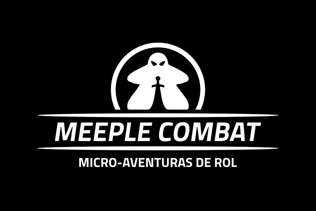

¡BIENVENIDOS AVENTUREROS!
Meeple Combat es una herramienta pensada para instruir a nuevos jugadores en el mundo de rol, brindando un sistema sólido y compacto, pero con un sin fín de posibilidades.
Los participantes comprenderán todo durante su primera partida, pero quedarán ávidos de probar nuevas combinaciones y estilos de juego.
Con su sistema de “esbirros” se puede generar un líder y varios personajes secundarios, eliminando así la necesidad de una aplicación extra para masters.
Sencillo, versátil y eficaz, este sistema ofrece incontables horas de diversión a ti y a tu grupo de amigos.
JUGAR AHORA
SINOPSIS

IMPRIMIBLES